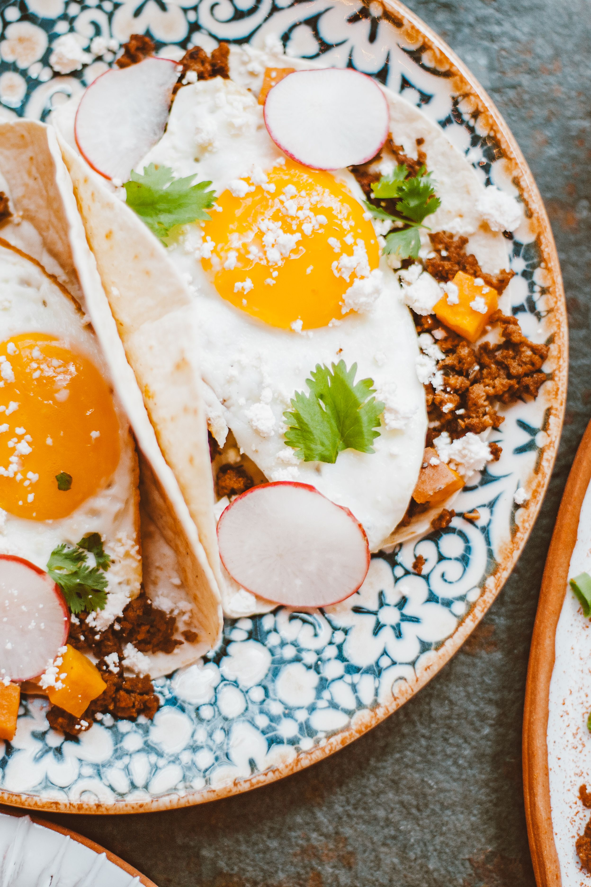
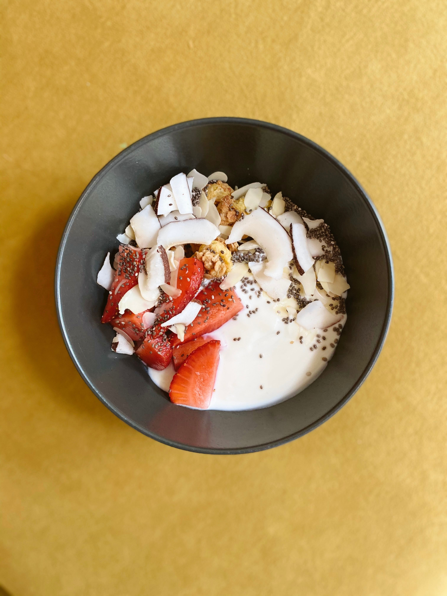
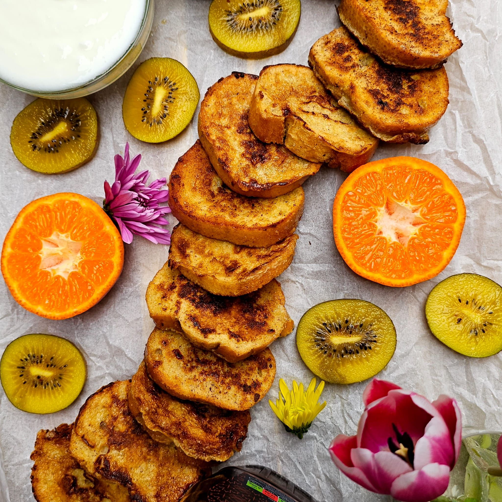
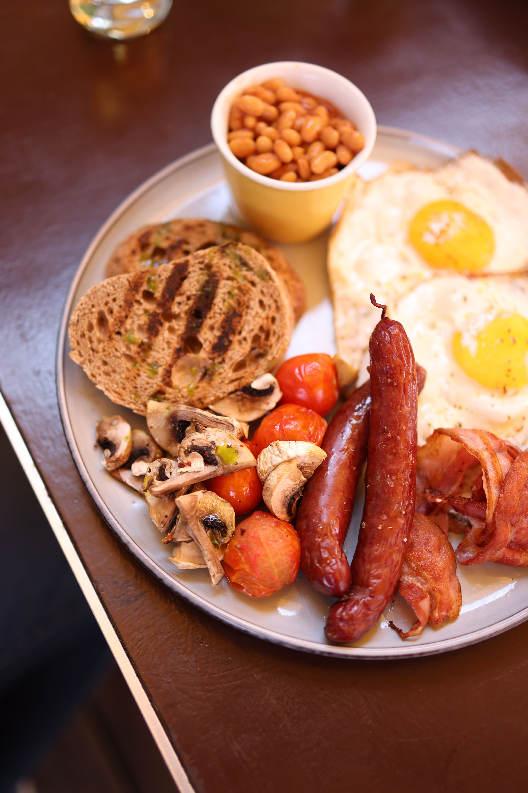
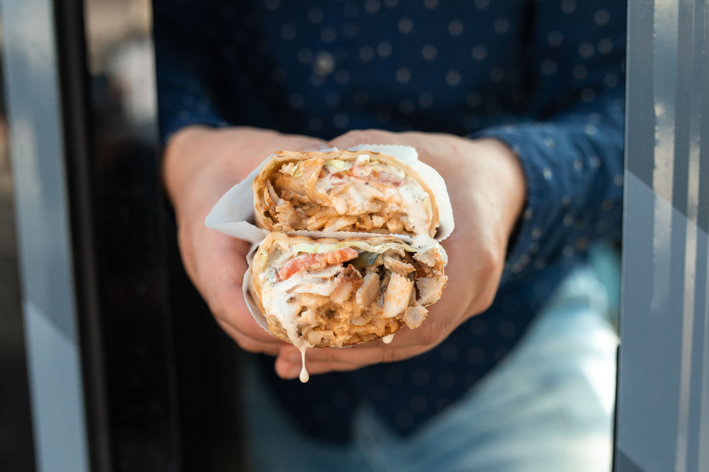
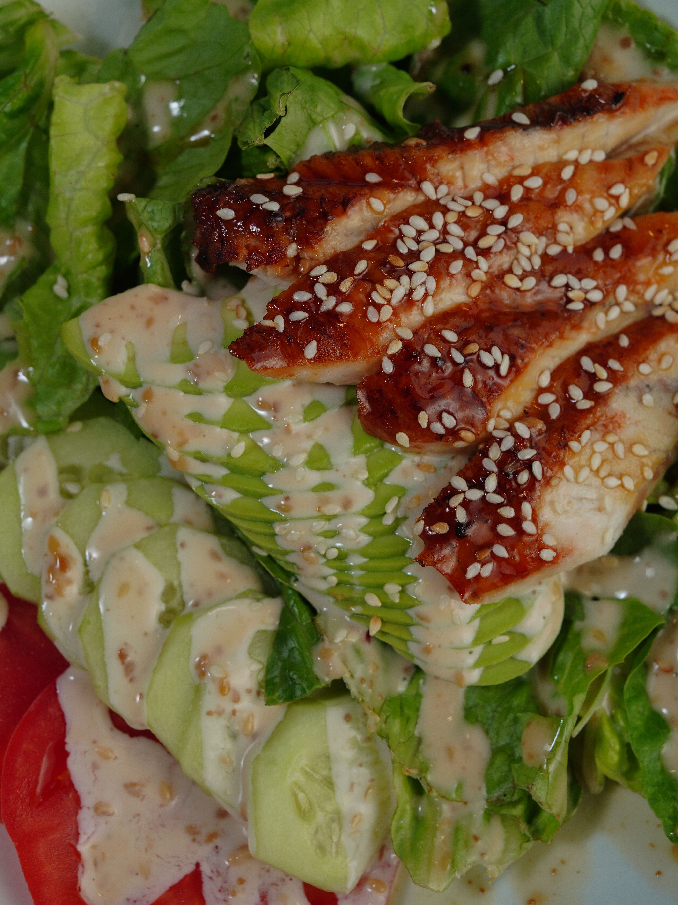
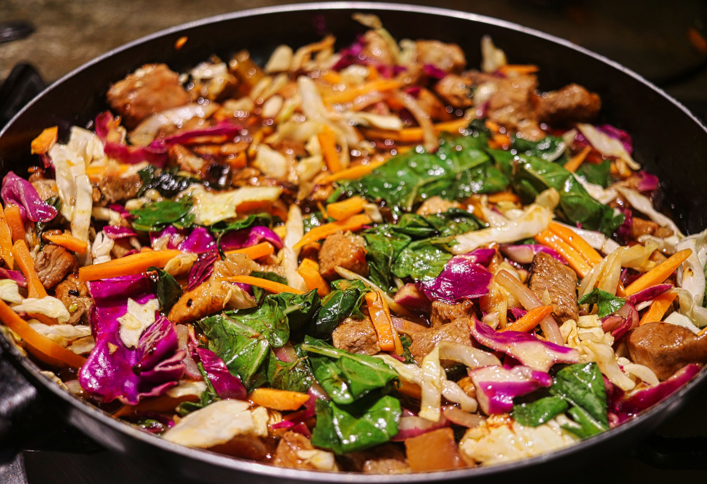
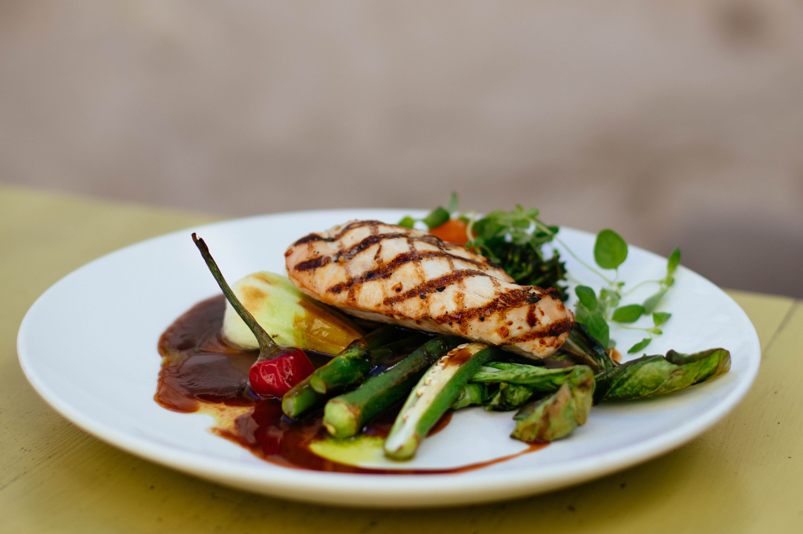
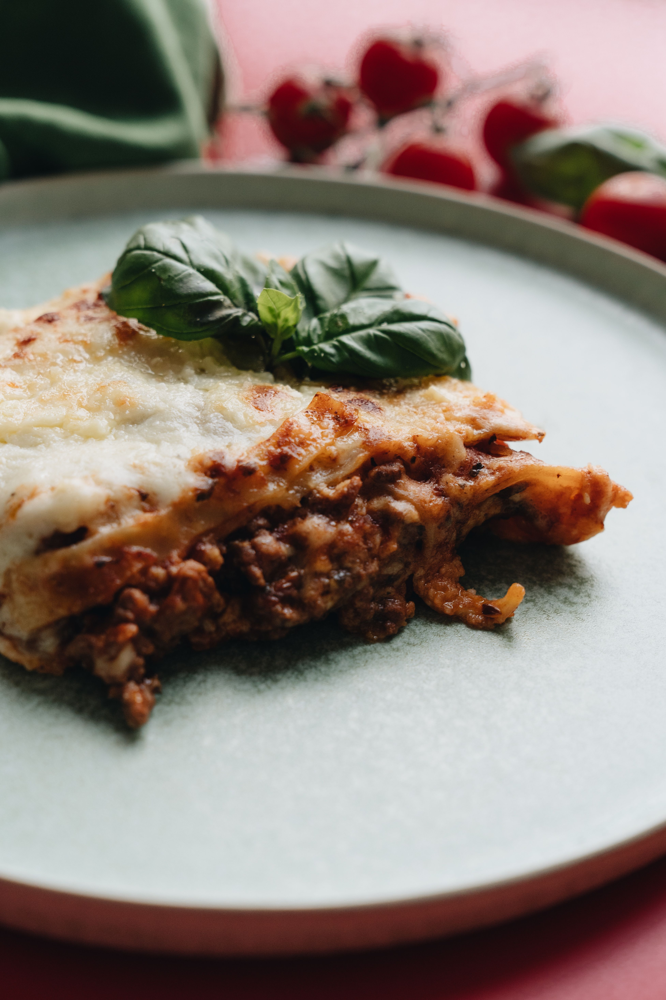
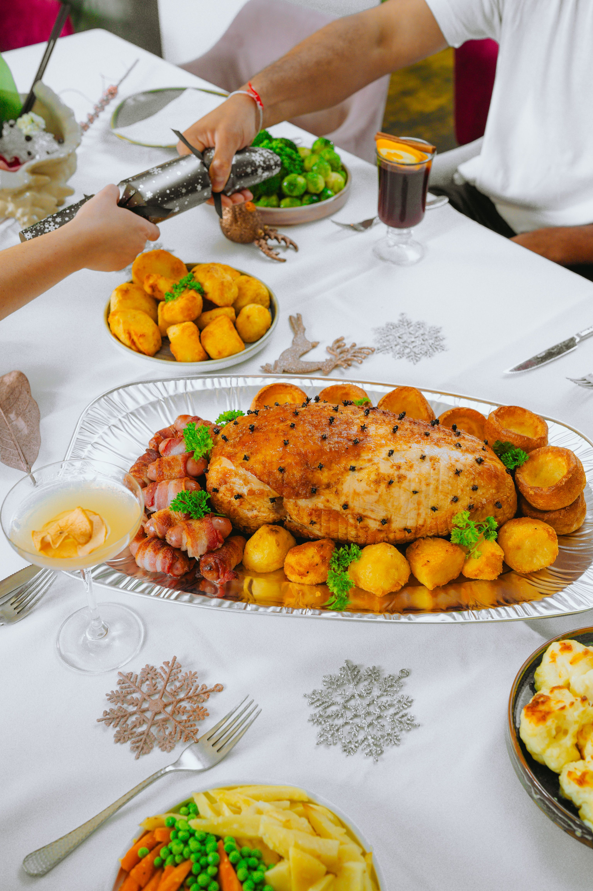

Breakfast Taco - R65

A warm breakfast taco filled with scrambled eggs, cheese, salsa, guacamole and fresh tomato.
Fresh meals, planned around your life.
Choose from our selection of freshly prepared breakfast, lunch and dinner meals. Orders must be placed at least one day before the selected delivery date.

A warm breakfast taco filled with scrambled eggs, cheese, salsa, guacamole and fresh tomato.

Creamy yoghurt served with seasonal fresh fruit and granola.

French toast served with fresh seasonal fruit and a light drizzle of honey.

Eggs served with grilled tomato, mushrooms, bacon, toast and a choice of chicken sausage or beef sausage.

Grilled chicken with lettuce and tomato, served in a soft wrap with a choice of garlic or spicy sauce.

Grilled chicken served with avocado and a selection of fresh salad ingredients.

Pasta served with chicken pieces in a creamy sauce and seasonal vegetables.

Grilled chicken served with seasoned rice and fresh vegetables.

Beef strips cooked with mixed vegetables and served with rice and an Asian-style sauce.

Grilled chicken served with seasonal vegetables and a choice of rice or roasted potatoes.

Layers of pasta, seasoned beef mince, tomato sauce and cheese, served with a side salad.

Pasta prepared with seasonal vegetables and a tomato-based sauce.
Customers can plan meals for several days, weeks or an entire month. Different meals and delivery dates can be selected in advance.

We provide meal options for holidays, family gatherings and other special occasions. Customers can make an enquiry about the type of meal required, number of people, preferred date and additional requirements.
Special-occasion orders should be made as early as possible to allow enough time for planning and preparation.
Make an Enquiry